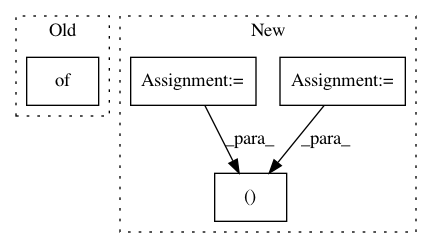

20fe7b4cbf62f6223241d6cafc6e8ea48701efdd,softlearning/value_functions/utils.py,,get_Q_function_from_variant,#Any#Any#,70
Before Change
def get_Q_function_from_variant(variant, env):
Q_params = variant["Q_params"].copy()
kwargs = Q_params.get("kwargs", {})
Q_function = Q_FUNCTION_FUNCTIONS[
Q_params["type"]](
env.active_observation_shape,
After Change
def get_Q_function_from_variant(variant, env):
Q_params = variant["Q_params"].copy()
observation_shape = env.active_observation_shape
action_shape = env.action_space.shape
input_shapes = (observation_shape, action_shape)
return get_value_function_from_params(Q_params, input_shapes)
In pattern: SUPERPATTERN
Frequency: 4
Non-data size: 4
Instances
Project Name: rail-berkeley/softlearning
Commit Name: 20fe7b4cbf62f6223241d6cafc6e8ea48701efdd
Time: 2018-10-22
Author: hartikainen@berkeley.edu
File Name: softlearning/value_functions/utils.py
Class Name:
Method Name: get_Q_function_from_variant
Project Name: rail-berkeley/softlearning
Commit Name: 459441e166ebcd176698041e260d4f467652e7ac
Time: 2018-07-21
Author: kristian.hartikainen@gmail.com
File Name: softlearning/policies/latent_space_policy.py
Class Name: LatentSpacePolicy
Method Name: get_action
Project Name: rail-berkeley/softlearning
Commit Name: 85aea8b77a57afbb8d81a1235382b73bff6552be
Time: 2018-07-27
Author: kristian.hartikainen@gmail.com
File Name: examples/mujoco_all_diayn_finetune.py
Class Name:
Method Name: main
Project Name: rail-berkeley/softlearning
Commit Name: 9ec29d178a98cd2648f0af079bfc4aac27693e88
Time: 2018-10-19
Author: hartikainen@berkeley.edu
File Name: examples/multigoal_sac.py
Class Name:
Method Name: main